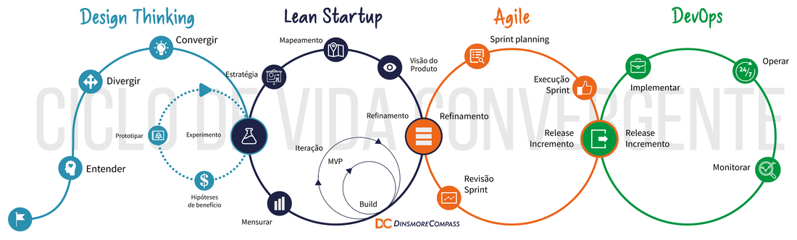

Parte I - Cultura de Inovação Ágil
Agilidade
O desenvolvimento ágil é um método adaptativo, ao invés de preditivo, e coloca as pessoas em primeiro lugar, ao invés de focar nos processos. Isso significa que não há uma divisão clara entre as fases e as disciplinas podem, muitas vezes, ser executadas em paralelo. O objetivo principal dos projetos ágeis é entregar um produto de qualidade para o cliente, e no caso de projetos de software, essa entrega envolve a criação de software de qualidade. Esse resultado é alcançado através de um planejamento, projeto e desenvolvimento iterativo e incremental do produto de software, com a participação e validação contínua dos clientes ou patrocinadores da ideia.
Pessoas envolvidas em um projeto de software
Stakeholders são todas as pessoas, grupos ou organizações que têm interesse ou influência no resultado de um projeto de software. Eles podem ser internos, como membros da equipe de desenvolvimento, gerentes de projeto, líderes de equipe, ou externos, como clientes, usuários finais, fornecedores ou parceiros comerciais. Entre os stakeholders comuns em um ciclo de projeto de software, estão:
- Testadores: responsáveis por testar e validar o software para garantir que ele atenda aos requisitos e padrões de qualidade estabelecidos.
- Interaction Designers: são responsáveis pela criação da interface do usuário, garantindo que a experiência do usuário seja intuitiva, eficiente e agradável
- Arquitetos: são responsáveis por projetar a arquitetura do sistema, garantindo que ele seja escalável, seguro e fácil de manter.
- Gestor de Projeto: são responsáveis por liderar o projeto e garantir que ele seja entregue dentro do prazo, orçamento e escopo estabelecidos
- Gestor de Produto e Executivos: têm como objetivo liderar a estratégia e o desenvolvimento de produtos para atender às necessidades dos clientes e do negócio
- Escritores técnicos: são responsáveis pela criação da documentação do software, incluindo manuais de usuário, guias de instalação e documentos técnicos
- Usuários finais: são a razão pela qual o software está sendo desenvolvido, e suas necessidades e feedbacks devem ser levados em consideração em todo o processo
- Programadores: são responsáveis pela codificação e desenvolvimento do software, transformando as ideias em código.
- Recursos Humanos: responsável por recrutar, contratar e gerenciar a equipe de desenvolvimento de software
Nos times ágeis, os papéis e as responsabilidades são substituídos por atribuições, o que significa que o foco é colocado nas tarefas que precisam ser realizadas e não em quem deve fazê-las. Essas atribuições são flexíveis e podem ser desempenhadas por uma ou mais pessoas no time. Também é comum que um único indivíduo assuma várias atribuições para garantir que as necessidades do projeto sejam atendidas de maneira eficiente.
Essa abordagem é uma resposta ao modelo cascata, no qual cada etapa do processo é conduzida por profissionais específicos, definidos pelos seus papéis. Nos times ágeis, há uma maior flexibilidade e colaboração entre os membros da equipe, permitindo que as habilidades individuais sejam utilizadas de forma mais adaptável às necessidades do projeto.
As atribuições em times ágeis são frequentemente mais focadas em entregas específicas, em vez de tarefas individuais, o que ajuda a manter o foco no objetivo geral do projeto e promove uma abordagem mais centrada no cliente. Isso significa que as equipes ágeis estão mais preparadas para lidar com mudanças inesperadas e se adaptar rapidamente, mantendo-se alinhadas com as necessidades do negócio.
Um time tipicamente ágil, temos a necessidade das seguintes atribuições
-
Product Owner - Embora o termo “Product Owner” tenha sido introduzido pelo Scrum como uma atribuição específica em equipes ágeis, é comum encontrar outras variações de definição e nomenclatura dessa função em diferentes contextos empresariais. Alguns exemplos incluem “Estrategista de Produto” (Product Strategist) e “Gestor de Produto” (Product Manager), que podem ter algumas diferenças em suas responsabilidades e atribuições específicas, mas, em geral, têm como objetivo liderar a estratégia e o desenvolvimento de produtos para atender às necessidades dos clientes e do negócio. Independentemente da nomenclatura, o papel do Product Owner ou suas variações é crucial para o sucesso de projetos ágeis, pois eles são responsáveis por definir as prioridades, tomar decisões e garantir a entrega de valor para o cliente.
-
Scrum Master: garantir que o processo Scrum seja seguido corretamente. Ele/ela trabalha para remover quaisquer impedimentos ou obstáculos que possam estar impedindo o time de cumprir seus objetivos, ajudando a equipe a se auto-organizar e colaborar de maneira eficaz. O Scrum Master também é responsável por liderar as cerimônias do Scrum, como a Daily Scrum, a Sprint Review e a Sprint Retrospective, e por promover uma cultura de melhoria contínua.
-
DevOps: DevOps é uma cultura e prática que tem como objetivo integrar as equipes de desenvolvimento (Dev) e operações (Ops) para acelerar a entrega de software de alta qualidade. Em times ágeis, o DevOps é frequentemente uma função ou atribuição que ajuda a garantir que a entrega de software seja automatizada, segura e rápida. Os DevOps trabalham em conjunto com o time de desenvolvimento para garantir que o software seja entregue rapidamente e com qualidade, automatizando processos de testes, integração, entrega e monitoramento de software.
-
Arquiteto: é responsável por definir a arquitetura do sistema e garantir que ela atenda às necessidades do negócio e do cliente. Em times ágeis, o arquiteto geralmente é uma função ou atribuição que trabalha em conjunto com o time de desenvolvimento para garantir que a arquitetura seja flexível, escalável e segura. O arquiteto também é responsável por manter a consistência da arquitetura em todo o sistema e garantir que as soluções sejam consistentes e sustentáveis.
-
Desenvolvedor back-end: é responsável por trabalhar nos servidores, bancos de dados e outros componentes do software que não estão visíveis para o usuário final. Eles são responsáveis por desenvolver a lógica de negócios e a integração com outros sistemas, garantindo que o software funcione corretamente e de forma eficiente.
-
Desenvolvedor Front-end: é responsável por desenvolver a interface do usuário, ou seja, tudo o que o usuário vê e interage com o software. Eles são responsáveis por garantir que a interface seja amigável, responsiva e intuitiva, trabalhando com designers para garantir uma experiência do usuário de alta qualidade. O desenvolvedor front-end também é responsável por garantir que o software seja compatível com diferentes navegadores e dispositivos.
4.5 Cleaner 4.6 Tracker 4.7 Gerente 4.8 Outros papéis
Manifesto ágil
Em fevereiro de 2001, nos Estados Unidos, 17 desenvolvedores de software iniciaram um movimento que se tornaria a base para a criação dos frameworks e métodos ágeis. Insatisfeitos com os resultados obtidos na adoção das metodologias existentes, o grupo criou uma declaração de valores e princípios que representam uma maneira melhor de desenvolver software.
O Manifesto é composto por um conjunto de quatro valores e doze princípios que representam a essência do Ágil e devem guiar as opções e alternativas relativas a práticas, papéis, cerimônias, métodos ou frameworks.
Os quatro valores do Manifesto Ágil são:
- Indivíduos e interações mais que processos e ferramentas;
- Software em funcionamento mais que documentação abrangente;
- Colaboração com o cliente mais que negociação de contratos;
- Responder a mudanças mais que seguir um plano.
Os doze princípios do Manifesto Ágil são:
- Nossa maior prioridade é satisfazer o cliente por meio da entrega contínua e adiantada de software com valor agregado.
- Mudanças nos requisitos são bem-vindas, mesmo tardiamente no desenvolvimento. Processos ágeis tiram vantagem das mudanças visando vantagem competitiva para o cliente.
- Entregar frequentemente um software funcionando, num prazo de poucas semanas a poucos meses, com preferência à menor escala de tempo.
- Pessoas de negócio e desenvolvedores devem trabalhar diariamente em conjunto por todo o projeto.
- Construa projetos em torno de indivíduos motivados. Dê a eles o ambiente e o suporte necessário e confie neles para fazer o trabalho.
- O método mais eficiente e eficaz de transmitir informações para e entre uma equipe de desenvolvimento é por meio de conversa face a face.
- Software funcionando é a medida primária de progresso.
- Os processos ágeis promovem desenvolvimento sustentável. Os patrocinadores, desenvolvedores e usuários devem ser capazes de manter um ritmo constante indefinidamente.
- Contínua atenção à excelência técnica e bom design aumenta a agilidade.
- Simplicidade – a arte de maximizar a quantidade de trabalho não realizado – é essencial.
- As melhores arquiteturas, requisitos e designs emergem de equipes auto-organizáveis.
- Em intervalos regulares, a equipe reflete sobre como se tornar mais eficaz e então refina e ajusta seu comportamento de acordo.
As pessoas que assinaram o Manifesto Ágil em 2001 foram um grupo de desenvolvedores de software que estavam insatisfeitos com as metodologias existentes e buscavam uma maneira melhor de desenvolver software. Eles se reuniram para criar uma declaração de valores e princípios que representassem uma abordagem mais eficiente e eficaz para o desenvolvimento de software.
Esses desenvolvedores não criaram um novo método específico, mas sim um conjunto de princípios e valores que poderiam ser aplicados em diferentes métodos e práticas de desenvolvimento de software. O objetivo era promover uma cultura de colaboração, flexibilidade, adaptabilidade e entrega contínua de valor para o cliente.
A partir do Manifesto Ágil, foram desenvolvidos diversos frameworks e métodos ágeis, como Scrum, XP (Extreme Programming), Kanban, entre outros, que buscam implementar esses valores e princípios em práticas específicas de desenvolvimento de software. O Manifesto Ágil é um marco importante na história do desenvolvimento de software e continua a ser uma influência significativa na maneira como projetos de software são gerenciados e executados atualmente.
Metodologias Ágeis
Valores ou “cultura” são fundamentais em software! No que diz respeito às Pessoas, as metodologias ágeis enfatizam a importância do relacionamento entre as pessoas e buscam melhorar esse relacionamento por meio de práticas como retrospectivas, liderança servil e design centrado no usuário. O objetivo é criar um ambiente colaborativo e produtivo em que as pessoas possam se comunicar de forma clara e trabalhar juntas para alcançar os objetivos do projeto.
Em relação ao Processo, as metodologias ágeis trazem melhorias na forma como as equipes trabalham e nos processos que elas seguem. Esses processos são mais eficientes, com métricas que permitem visibilidade e ferramentas que possibilitam a melhoria contínua. Os processos são mais leves do que os métodos tradicionais, o que os torna mais flexíveis e adaptáveis às mudanças.
No que se refere ao Produto, as metodologias ágeis buscam a eficácia na criação, evolução e operação dos produtos. O objetivo é criar produtos de alta qualidade que atendam às necessidades dos usuários.
Finalmente, um conceito chave das metodologias ágeis é o Time-Box. O conceito de time-boxing é uma das práticas-chave das metodologias ágeis. Time-boxing significa definir um tempo limite para a realização de uma atividade, reunião ou ciclo de desenvolvimento. Por exemplo, as sprints do Scrum são time-boxes para o desenvolvimento de software, com um período definido de 1 a 4 semanas para concluir uma série de tarefas. A prática de time-boxing ajuda a criar um senso de urgência e foco na equipe, além de garantir que as atividades sejam concluídas dentro de um período definido. Isso também ajuda a evitar o desperdício de tempo e recursos, uma vez que a equipe sabe que tem um prazo limitado para concluir uma determinada atividade.
Scrum - Produtividade da Equipe
O Scrum é um framework ágil que visa a entrega de produtos complexos. Embora tenha sido inicialmente proposto para projetos de desenvolvimento de software, ele pode ser aplicado em qualquer contexto de projetos complexos e inovadores, especialmente aqueles com requisitos emergentes ou que mudam rapidamente. Foi proposto pelo Jeff Sutherland, e o guia completo do Scrum é constantemente atualizado e disponibilizado em português aqui.
Objetivo
O principal objetivo do Scrum é oferecer um framework ágil para o desenvolvimento, entrega e sustentação de produtos complexos. Ele busca otimizar a colaboração e a comunicação entre as equipes, otimizando assim a produtividade e entrega.
Uma das características essenciais do Scrum é a formação de um time colaborativo, multifuncional e auto-organizado. A equipe é responsável pela entrega do produto e deve trabalhar de forma alinhada e conjunta para alcançar os objetivos definidos. No Scrum, o processo é dividido em sprints, períodos de tempo curtos que geralmente variam entre uma a quatro semanas, nos quais o time se concentra em uma parte específica do produto e trabalha para entregá-la até o final da sprint.
O Scrum é composto por atribuições/papéis, eventos e artefatos. Os papéis incluem o Scrum Master, o Product Owner e o time de desenvolvimento. Os eventos incluem a sprint, a reunião diária, a revisão da sprint e a retrospectiva da sprint. Os artefatos incluem a lista do produto, a lista da sprint e o incremento do produto. Por ser um framework flexível e adaptável, o Scrum pode ser utilizado em diferentes tipos de projetos, desde que a equipe esteja comprometida com os valores e princípios do framework. A Figura abaixo ilustra o Scrum, no qual as cores distiguem os papeis, dos rituais (reuniões) e
Extreme Programming (XP) - Produtividade do Código
Extreme Programming, conhecido como XP, busca unir toda a equipe de desenvolvimento de software em torno de metas comuns e alcançáveis. Usando os valores e princípios do XP, as equipes aplicam as práticas apropriadas em seu próprio contexto, escolhendo aquelas que incentivam a criatividade humana e aceitam a fragilidade humana. Equipes XP produzem software de qualidade a um ritmo sustentável.
Objetivo
O principal objetivo do XP é alcançar resultados de software excepcionais, com um desenvolvimento mais eficiente e efetivo e menos defeitos do que é esperado atualmente Ele busca otimizar a colaboração e a comunicação entre as equipes, otimizando assim a produtividade e entrega.
O XP busca alcançar esses objetivos celebrando e atendendo às necessidades humanas de todos os envolvidos no desenvolvimento de software, desde patrocinadores, gerentes, testadores, usuários até programadores. Embora o XP tenha começado como uma metodologia para equipes pequenas que trabalham em projetos internos, equipes em todo o mundo usam o XP para projetos em grande escala, incorporados e embalados.
Princípios
- Humanity Economics
-
Mutual Benefit
- Self-Similarity
- Improvement
- Diversity
- Reflection
- Flow
- Opportunity
- Redundancy
- Failure
- Quality
- Baby Steps
- Accepted Responsibility
Abaixo, segue uma breve definição de cada uma das práticas:
- Sentar Juntos: os membros da equipe trabalham juntos em um mesmo espaço físico para facilitar a comunicação e a colaboração.
- Time Inteiro: toda a equipe, incluindo desenvolvedores, testadores e gerentes de projeto, é responsável pelo sucesso do projeto.
- Ambiente de Trabalho Informativo: o ambiente de trabalho é organizado de forma a fornecer informações relevantes para o projeto, como gráficos de progresso e histórico de bugs.
- Trabalho Energizado: a equipe trabalha em um ritmo sustentável, evitando sobrecarga e fadiga.
- Programação em Pares: dois programadores trabalham juntos em um mesmo computador, colaborando na resolução de problemas e na revisão de código.
- Stories: o desenvolvimento é baseado em histórias de usuário, que descrevem as funcionalidades desejadas pelo cliente.
- Ciclos Semanais: o desenvolvimento é dividido em ciclos semanais, com reuniões de planejamento e revisão.
- Ciclos Trimestrais: o desenvolvimento é dividido em ciclos trimestrais, com reuniões de planejamento e revisão de longo prazo.
- Slack(folga): é reservado um tempo para que os desenvolvedores possam trabalhar em atividades não relacionadas diretamente ao projeto.
- Build de 10 minutos: o processo de compilação do código é rápido, levando no máximo 10 minutos.
- Integração Contínua: as alterações no código são integradas e testadas continuamente, evitando conflitos e erros.
- Desenvolvimento Orientado a Teste (TDD): os testes são escritos antes do código, garantindo que as funcionalidades estejam sendo implementadas corretamente.
- Arquitetura Incromental: o design do software é evoluído de forma incremental, baseado nas necessidades do cliente.
- Envolvimento do Cliente Real: o cliente é envolvido diretamente no processo de desenvolvimento, fornecendo feedback constante.
- Implantação Incremental: as funcionalidades são entregues de forma incremental, permitindo que o cliente/usuário comece a utilizá-las antes do produto estar completo.
- Continuidade do Time: a equipe permanece a mesma ao longo do projeto, evitando mudanças bruscas e perda de conhecimento.
- Redução de Times: a equipe é reduzida ao longo do projeto, evitando desperdício de recursos.
- Análise da Causa Raiz: os problemas são analisados profundamente, buscando identificar suas causas raízes.
- Código Compartilhado: o código é compartilhado entre os membros da equipe, permitindo que o conhecimento seja disseminado e a colaboração seja facilitada.
- Códigos e Testes: o código e os testes são considerados igualmente importantes, garantindo a qualidade do produto.
- Base de Código Único: todo o código é armazenado em um mesmo repositório, facilitando a colaboração e a integração.
- Implantação Diária: as alterações são implantadas diariamente no ambiente de produção, garantindo que o cliente tenha acesso às funcionalidades mais recentes.
- Contrato com Escopo Negociado: o contrato é baseado em um escopo negociado com o cliente, permitindo que as necessidades do cliente sejam atendidas de forma mais eficiente.
Spotify - Escalando Times Ágeis
O Método Agile Spotify é uma abordagem de gestão de projetos que foi criada pela Spotify. Essa metodologia foi desenvolvida para atender às necessidades da empresa, que precisava de uma forma mais eficiente de gerenciar grandes equipes.
O Método Agile Spotify é baseado em princípios ágeis e consiste em uma estrutura organizacional flexível que permite que pequenas equipes trabalhem de forma autônoma e colaborativa. Com objetivo de otimizar a comunicação e colaboração entre equipes ágeis, o método traz duas camadas principais: Squads e Tribos. Os Squads são equipes pequenas e autônomas que trabalham em um projeto específico. As Tribos são formadas por vários Squads que trabalham juntos em um objetivo comum. Além disso, a metodologia utiliza ritos ágeis como sprints, revisões e retrospectivas para garantir uma entrega contínua de valor ao cliente.
As Guildas são grupos informais de pessoas com interesses em comum, que se reúnem regularmente para compartilhar conhecimento, trocar ideias e colaborar em projetos. As Guildas na Spotify são compostas por membros de diferentes Squads e Tribes, que têm interesses em comum, como design, tecnologia, marketing, entre outros. Esses grupos são criados organicamente e não são hierárquicos, o que significa que qualquer pessoa pode participar e contribuir para o grupo.
O objetivo das guildas é criar um espaço para o compartilhamento de conhecimento e colaboração, promovendo a inovação e a criatividade. Os membros das guildas são incentivados a compartilhar suas experiências e ideias, bem como a fornecer feedback uns aos outros. Dessa forma, as guildas ajudam a criar uma cultura de aprendizado contínuo.
A Figura abaixo mostra a estrutura organizacional ágil que permite que grandes empresas, como a Spotify, gerenciem projetos de forma eficiente e inovadora. Vale ressaltar que os Squads adotam práticas ágeis tanto do XP (Extreme Programming) quanto do Scrum, como sprints, retrospectivas, revisões, pareamento, entre outras. As equipes autônomas dos Squads são capazes de responder rapidamente às mudanças nas necessidades dos clientes e do mercado, enquanto as Tribos e Guildas permitem a colaboração entre diferentes áreas da empresa.

Entrega contínua e DevOps
DevOps é uma evolução do movimento ágil. DevOps é um esforço colaborativo e multidisciplinar dentro de uma organização para automatizar a entrega contínua de novas versões de software, garantindo sua correção e confiabilidade. Do ponto de vista organizacional, o movimento DevOps promove uma colaboração mais próxima entre desenvolvedores e operadores.
No livro (Continuous Delivery)[1], Humble defende um pipeline de implantação automatizado, no qual qualquer versão de software comitada no repositório deve ser uma versão candidata à produção. Depois de passar por stages, como compilação e testes automatizados, o software é enviado para produção com o apertar de um botão. Este processo é chamado de Entrega Contínua (Continuous Delivery). Uma variante é o Deploy Contínuo, que envia automaticamente para produção toda versão que passa pelo pipeline. Muitos autores relacionam DevOps com entrega e deploy contínuos.
Ciclo de Desenvolvimento de Projeto de Software
Independente do tamanho, complexidade do produto a ser desnvolvido, do tamanho e maturidade da equipe de desenvolvimento, qualquer projeto de software é um processo complexo e pode ser dividido em várias etapas, cada uma com suas próprias disciplinas e atividades específicas. Quanto as macro etapas de um ciclo de projeto de software, a figura abaixo ilustra tais etapas.
-
Planejamento: Esta etapa é fundamental para o sucesso do projeto de software. Envolve a identificação dos objetivos do projeto, a definição dos requisitos do sistema, a análise de riscos e a definição do escopo do projeto.
-
Análise: Nesta etapa, os requisitos do sistema são analisados em detalhes. Isso inclui a identificação de requisitos funcionais e não funcionais, a definição da arquitetura do sistema e a elaboração de modelos de dados.
-
Arquitetura: Na etapa de design, os modelos de dados são transformados em projetos técnicos e os requisitos funcionais são traduzidos em projetos de software. Isso inclui a definição das interfaces do usuário, a elaboração de diagramas de classe e a escolha das ferramentas e tecnologias a serem utilizadas.
-
Implementação: Nesta etapa, o código-fonte é escrito com base no projeto técnico. Isso envolve a codificação, testes unitários e a integração de diferentes módulos do software.
-
Testes (Verificação e Validação): Na etapa de testes, o software é testado em diferentes níveis, incluindo testes de unidade, testes de integração e testes de sistema. Isso ajuda a identificar defeitos e garantir que o software atenda aos requisitos definidos.
-
Implantação: Na etapa de implantação, o software é instalado e configurado em um ambiente de produção. Isso pode incluir a migração de dados, a instalação de software de terceiros e a configuração de hardware.
Além das etapas mencionadas anteriormente, é importante destacar que o desenvolvimento de software envolve diversas disciplinas, tais como programação, gerenciamento de projetos, análise de negócios, engenharia de software, testes de software, qualidade de software e segurança de software. Cada uma dessas disciplinas desempenha um papel importante no processo de desenvolvimento de software, contribuindo para garantir a qualidade e efetividade do produto final. Algumas das disciplinas mais comuns em um projeto de software são:
-
Engenharia de requisitos: Esta disciplina envolve a coleta, documentação e gestão dos requisitos do software, incluindo os requisitos funcionais e não funcionais, para que se possa desenvolver um plano de projeto.
-
Arquitetura de software: Esta disciplina envolve o projeto da estrutura do software, incluindo a definição das camadas, componentes e serviços, e a determinação da interação entre eles.
-
Design de software: Esta disciplina envolve a criação de modelos de design detalhados para cada componente ou serviço do software, incluindo interfaces de usuário, bancos de dados, APIs e outras partes.
-
Desenvolvimento de software: Esta disciplina envolve a implementação do software com base no design e na arquitetura definidos. Isso geralmente inclui a codificação, testes e integração.
-
Teste de software: Esta disciplina envolve a verificação e validação do software para garantir que ele atenda aos requisitos especificados e funcione corretamente.
-
Gerenciamento de projetos: Esta disciplina envolve a coordenação do planejamento, execução e monitoramento do projeto de software, incluindo o gerenciamento de recursos, prazos, orçamentos e riscos.
-
Implantação de software: Esta disciplina envolve a distribuição e instalação do software em um ambiente de produção, incluindo a configuração e gerenciamento de servidores e sistemas.
Após a fase de implementação, há uma etapa crucial no ciclo de vida do software: a manutenção. Essa fase consiste em um conjunto de atividades que visam garantir a continuidade da operação do software após sua implantação. A manutenção contínua é necessária para corrigir defeitos, atualizar dependências, implementar novas funcionalidades, refatorar código, aplicar patches de segurança e garantir que o software continue a funcionar corretamente. Essa fase pode ser subdividida em manutenção corretiva, preventiva e evolutiva, cada uma com seus próprios objetivos e atividades específicas.
É importante destacar que o entregável varia de acordo com as necessidades e objetivos do projeto. É responsabilidade do gerente de projeto definir claramente o entregável e as etapas necessárias para chegar a ele, garantindo que o projeto seja concluído com sucesso e dentro do prazo e orçamento previstos. Dependendo do objetivo do projeto, do tempo e investimento, o entregável ao fim de um ciclo de projeto pode ser:
- Protótipo: um protótipo é uma versão preliminar do software, geralmente usada para testar conceitos e validar requisitos de usuário. É comum que um protótipo contenha apenas uma pequena parte das funcionalidades finais do software.
- Prova de conceito (PoC): É uma demonstração de um conceito ou ideia para verificar a sua viabilidade ou para avaliar se é possível implementar algo. Geralmente, a PoC é uma versão simplificada do produto ou solução final, desenvolvida para validar a tecnologia, a arquitetura ou as funcionalidades-chave do projeto.
- Mínimo Produto Viável (MVP): É a versão mais básica de um produto ou serviço que pode ser lançada no mercado para validar a sua aceitação pelos clientes. O MVP é desenvolvido com o objetivo de obter feedback dos usuários e testar hipóteses sobre o produto, sem a necessidade de investir muito tempo e recursos em seu desenvolvimento.
- Release de software: É a versão de um produto de software que é lançada para uso público. A release inclui as funcionalidades desenvolvidas e testadas até aquele momento, com o objetivo de fornecer aos usuários uma versão estável e confiável do produto. Cada release é numerada e pode incluir correções de bugs, melhorias de desempenho e novas funcionalidades em relação às versões anteriores. As releases são normalmente numeradas seguindo um esquema de versionamento, como o SemVer (Semantic Versioning).
Ciclo de Projeto Ágil

Práticas Ágeis
Produtividade da Equipe
-
Planejamento: é uma reunião que ocorre no início de cada iteração ou sprint, em que a equipe define quais serão as tarefas que serão realizadas durante aquele período de tempo. O objetivo do planejamento é definir quais as histórias de usuário ou itens de backlog que serão implementados e como serão implementados. Durante o planejamento, a equipe deve estimar o tempo e recursos necessários para a conclusão de cada tarefa.
-
Review: é uma reunião que ocorre ao final de cada iteração ou sprint, em que a equipe apresenta as funcionalidades implementadas para o cliente ou para o Product Owner. O objetivo da revisão é demonstrar o progresso do projeto, obter feedback e identificar oportunidades de melhoria. Durante a revisão, a equipe deve mostrar as funcionalidades implementadas e explicar como elas atendem às necessidades do cliente.
-
Retrospectiva: é uma reunião que ocorre ao final de cada iteração ou sprint, em que a equipe analisa o processo de desenvolvimento e identifica oportunidades de melhoria. O objetivo da retrospectiva é identificar o que funcionou bem e o que pode ser melhorado, e definir ações para implementar as melhorias identificadas. Durante a retrospectiva, a equipe deve discutir os problemas enfrentados durante a iteração, as soluções encontradas e como melhorar o processo de desenvolvimento para a próxima iteração.
-
Stand-up: é uma reunião diária de curta duração, geralmente realizada no início do dia de trabalho, em que a equipe discute o progresso do projeto e identifica possíveis obstáculos. O objetivo do stand-up é manter a equipe alinhada e informada sobre o que está sendo feito e quais são as prioridades para aquele dia. Durante o stand-up, cada membro da equipe deve responder a três perguntas: o que foi feito desde a última reunião, o que será feito até a próxima reunião e quais são os obstáculos que estão impedindo o progresso. O stand-up é uma reunião rápida e objetiva, que não deve durar mais do que 15 minutos.
- Programação em pares (Pair Programming): dois programadores trabalham juntos em um único computador para desenvolver o código, revisando e testando cada linha de código.
- Releases pequenos e frequentes (Small Releases): novas funcionalidades são entregues em pequenos pacotes frequentemente, para obter feedback rápido e permitir mudanças de direção.
- Cliente presente (On-Site Customer): um representante do cliente está presente durante todo o processo de desenvolvimento, para garantir que as necessidades do cliente sejam atendidas.
- Metáfora (Metaphor): uma metáfora é usada para descrever o sistema, tornando mais fácil para os desenvolvedores entenderem a complexidade do sistema.
-
Ritmo sustentável (Sustainable Pace): a equipe de desenvolvimento trabalha em um ritmo saudável e sustentável, para evitar o esgotamento e manter a qualidade do trabalho.
- Sit Together
- Whole Team
- Informative Workspace
- Energized Work
- Pair Programming
- Stories
- Weekly Cycle
- Quarterly Cycle
- Slack
- Ten-Minute Build
- Continuous Integration
- Test-First Programming
- Incremental Design
Métricas Ágeis
Reuniões: por que elas existem?
As reuniões existem para atender à necessidade humana de comunicação e colaboração. Elas são utilizadas para compartilhar informações importantes, alinhar objetivos e tomar decisões. No entanto, as reuniões devem ser bem organizadas e estruturadas para que sejam eficazes.
É importante ressaltar que a comunicação não é apenas uma questão de informação, mas também de relacionamentos interpessoais. As reuniões permitem que os membros da equipe interajam e se conheçam melhor, o que pode aumentar a coesão e a colaboração.
Embora algumas pessoas possam questionar a necessidade de reuniões e preferir métodos de comunicação mais informais, é importante lembrar que as reuniões são uma oportunidade para envolver toda a equipe e obter feedback de todas as partes interessadas. Além disso, as reuniões podem ajudar a minimizar conflitos e garantir que todas as informações sejam compreendidas corretamente.
Por fim, é importante destacar que a pessoa que lidera a reunião desempenha um papel fundamental no sucesso da mesma. É essencial que a pessoa Tech Lead seja capaz de manter a reunião focada, garantir que todos os membros da equipe tenham a oportunidade de falar e incentivar a participação ativa de todos os envolvidos.
Em resumo, as reuniões são uma ferramenta valiosa para a comunicação e colaboração em ambientes de trabalho, mas devem ser bem organizadas e estruturadas para serem eficazes. A pessoa Tech Lead tem um papel fundamental no sucesso da reunião, e a comunicação é importante não apenas para transmitir informações, mas também para construir relacionamentos interpessoais e aumentar a coesão da equipe.
Papel do Scrum Master/Teach Lead na reunião?
As reuniões são sustentadas por quatro pilares fundamentais que guiam todas as ações e atitudes do Scrum Master. Esses pilares são: guiar as pessoas, criar conexões, observar e intervir e consenso ou consentimento.
Guiar as pessoas envolve criar um ambiente seguro e confortável para que os participantes possam expressar suas opiniões. Criar conexões é essencial para que todos se sintam ouvidos e suas opiniões conectadas, gerando confiança entre o grupo. A pessoa Tech Lead deve ter uma escuta ativa e estar atenta para perceber se o grupo está caminhando rumo ao objetivo do encontro.
Observar e intervir é a base para estimular a eficiência do processo, permitindo que a pessoa Tech Lead identifique elementos que possam prejudicar a eficácia do encontro e saiba como agir em relação a eles. E, finalmente, o consenso ou consentimento é fundamental para garantir que o grupo possa tomar decisões equilibradas, identificando a melhor abordagem para a tomada de decisão e evitando que o processo se torne custoso para a organização.
Ao seguir esses quatro pilares, a pessoa Tech Lead pode conduzir reuniões e encontros de forma mais eficaz, garantindo que todos os participantes possam contribuir e que as decisões tomadas sejam equilibradas e bem-sucedidas.
Os erros e acertos são oportunidades excelentes para aprender e evoluir na habilidade de facilitação. É importante lembrar que essa é uma habilidade que requer prática e aperfeiçoamento contínuos. Nós, autores, estamos nessa jornada junto com você.
Para ajudá-lo a evitar alguns dos erros comuns na facilitação, gostaríamos de compartilhar alguns dos erros communs já observados na disciplina: tentar resolver todos os problemas em uma única reunião, falta de energia da pessoa facilitadora ou do grupo, e não alinhar o contexto e objetivo da reunião. Para mais detalhes sobre cada um desses erros, você pode consultar nosso livro A Arte da Facilitação. A importância de reconhecer e aprender com nossos erros e acertos é fundamental para a evolução profissional. Devemos estar abertos a cometer erros e aprender com eles, pois nenhuma jornada é construída apenas com sucessos.
Problemas que podem ocorrer nas reuniões
As reuniões podem ser altamente produtivas e eficazes, mas também estão sujeitas a uma série de disfunções que podem prejudicar seu propósito e resultados. Algumas das disfunções comuns incluem bate-boca e confronto, falta de tempo disponível, voltar à estaca zero e lidar com um grande número de pessoas e suas contribuições. No entanto, existem estratégias que as pessoas Tech Leads podem usar para minimizar essas disfunções e maximizar a eficácia da reunião.
Em caso de bate-boca e confronto, é recomendado fazer uma pausa estratégica ou até mesmo cancelar a reunião para evitar conflitos desnecessários e manter o objetivo da reunião. Para lidar com a falta de tempo disponível, a estratégia de timeboxing é uma boa opção, permitindo que os participantes se concentrem em tópicos prioritários e evitem discussões irrelevantes.
Quando um grupo volta à estaca zero, pode ser útil criar um glossário com definições importantes para o entendimento geral do grupo e revisar periodicamente essas definições para manter a progressão do grupo.
Ao lidar com um grande número de pessoas, a pessoa Tech Lead deve buscar o consentimento do grupo para garantir uma tomada de decisão equilibrada e evitar uma decisão catastrófica.
Com essas estratégias em mente, a pessoa Tech Lead pode garantir uma reunião produtiva e eficaz para todos os participantes.
Reunião diária em pé
A reunião diária em pé, também conhecida como “daily scrum” e “stand up”, é uma breve atualização de status em que toda a equipe se reúne diariamente. São uma solução recorrente para um conjunto particular de problemas que surgem quando um grupo de pessoas tenta trabalhar juntas como equipe. Ficamos em pé para manter a reunião curta. Cada membro da equipe deve responder a 3 perguntas relativas as suas atividades no projeto: (1) o que fez ontem, (2) o que planeja fazer hoje, (3) quais são os problemas que tem enfrentado para realizar seu trabalho. No entanto, essa definição simples não captura os detalhes sutis que distinguem uma reunião efetiva de uma perda de tempo. As reuniões diárias bem conduzidas agregam um valor significativo às equipes. Primeiro, é uma forma de manter o ritmo de trabalho, uma vez que diariamente a equipe deve compartilhar seu diário de bordo. Segundo, para gestores e lideres de projeto, é uma forma de identificar riscos no projeto (tarefas complexas, dependências organizacionais etc) e agir o mais rápido possivel para destravar essas travas de produtividades. Outros benefícios de sincronizar regularmente as equipes no stand up para:
-
Compartilhar problemas e melhorias. Um dos principais benefícios de uma equipe em relação ao trabalho individual é que os membros da equipe podem se ajudar quando alguém encontra um problema ou descobre uma maneira melhor de fazer algo. Uma “equipe” em que os membros da equipe não se sentem confortáveis em compartilhar problemas e/ou não se ajudam tende a ser ineficaz. Problemas podem ser identificados no stand-up, os membros da equipe que podem ajudar a resolve-los mapeados, e após o stand-up essas pessoas se reúnem para planejar a solução.
-
Compartilhar a compreensão dos objetivos. Mesmo que tenhamos pensado que entendemos uns aos outros no início (o que provavelmente não era o caso), nossa compreensão tende a se afastar, assim como o contexto em que estamos operando. Uma “equipe” em que cada membro está trabalhando em direção a objetivos diferentes tende a ser ineficaz.
-
Coordenar esforços. Se o trabalho não precisa ser coordenado, você não precisa de uma equipe. Por outro lado, se você tem uma equipe, presumo que o trabalho exija coordenação. Uma coordenação deficiente entre os membros da equipe tende a levar a resultados ruins.
-
Identificar-se como equipe. É muito difícil identificar-se psicologicamente com um grupo se você não se envolver regularmente com o grupo. Você não desenvolverá um forte senso de relacionamento mesmo que acredite que eles sejam capazes e busquem os mesmos objetivos.
Time alinhado Troca de conhecimento Como começar? Erros mais comuns de uma reunião em pé
Melhoria contínua com retrospectivas
Feedback
Checklist para Tech Lead em reuniões
- Visibilidade do tempo de duração
- Não seja o centro das atenções
- Dê oportunidade de fala para todos
- Defina um tomador de decisão
- Identifique o efeito pipoca durante a reunião
- Dê espaço para o silêncio
- Faça acordos prévios
- Intervalos regulares
Produtividade de Software
- Desenvolvimento guiado por testes (Test Driven Development - TDD): os testes são escritos antes do código, para garantir que a funcionalidade esteja correta e funcionando corretamente.
- Integração contínua (Continuous Integration - CI): o código é integrado e testado automaticamente várias vezes ao dia para evitar conflitos e detectar erros de integração.
- Refactoring: o código é constantemente melhorado para torná-lo mais limpo, legível e fácil de manter.
- Design simples (Simple Design): o código é mantido o mais simples possível para evitar complexidade desnecessária.
- Programação orientada a objetos (Object-Oriented Programming - OOP): o código é organizado em objetos para facilitar a compreensão e a manutenção.
Atrasos de Entregas
É importante lembrar que existem muitos outros fatores que podem contribuir para atrasos, como falta de recursos, problemas de comunicação ou mudanças nos requisitos do projeto. No entanto, durante as execuções da metodologia, os três motivos abaixo são comumente citados como causas de atrasos:
- Falta de alinhamento sobre datas e entregáveis: Quando não há um acordo claro sobre prazos e objetivos, pode haver uma falta de foco e priorização no projeto. Isso pode levar a um atraso na entrega dos trabalhos, uma vez que as equipes não estão trabalhando juntas em direção a um objetivo comum.
- Atraso da Sprint Zero: A Sprint Zero é uma fase inicial em que a equipe se concentra em preparar o ambiente para o projeto e definir o escopo e os requisitos iniciais. Se essa fase não for concluída a tempo, pode levar a um atraso no início do desenvolvimento do projeto e, consequentemente, no prazo de entrega final. É importante ter uma visão realista do que é necessário para concluir a Sprint Zero com sucesso. Isso inclui alocar tempo e recursos suficientes para realizar todas as tarefas necessárias, incluindo a configuração do ambiente, a definição dos requisitos, a criação de protótipos e a documentação do projeto. Além disso, é importante ter uma comunicação clara entre a equipe e as partes interessadas para que todos entendam o que é necessário para concluir a Sprint Zero e quais são as expectativas para o projeto. Dessa forma, é possível minimizar os riscos de atrasos na Sprint Zero e garantir que o projeto comece com o pé direito.
- Problemas de comunicação:
- Membros do time com dedicação/ritmo de trabalho heterogêneos: Quando membros da equipe não alinham o ritmo de trabalho esperados, isso pode afetar a produtividade e a eficiência do projeto, uma vez que há uma curva de aprendizado para os membros se adaptem ao projeto e trabalhem efetivamente. Isso pode resultar em atrasos no desenvolvimento e na entrega do projeto, conflitos entre membros, não compartilhamento do conhecimento, sobrecarga de alguns membros.
Dicas para aumentar a produtividade
Dica
O principal foco do Onboarding é guiar os membros em um processo de auto aprendizado além da mentoria/liderança serem crucial para o compartilhamento de práticas e cultura